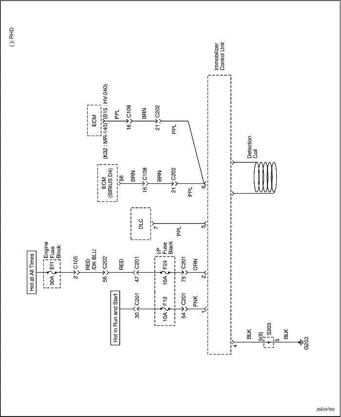
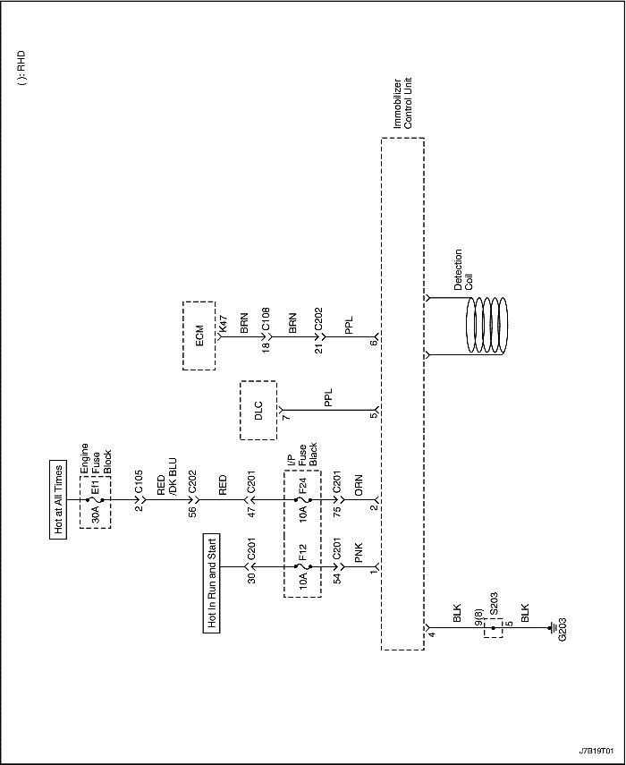
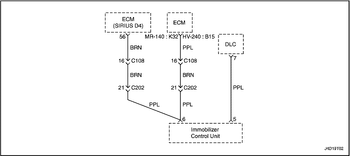
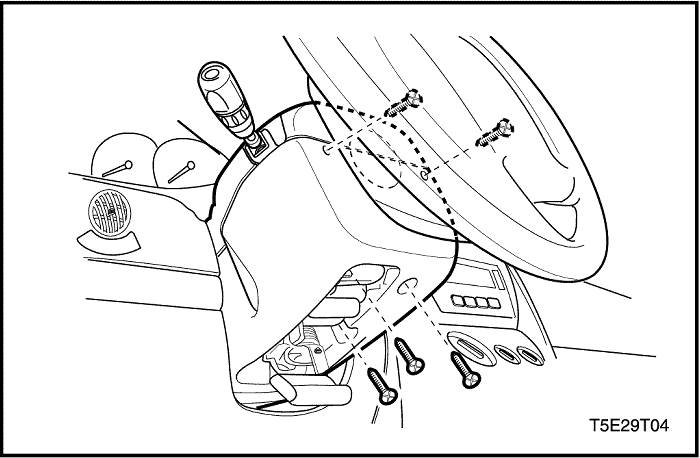
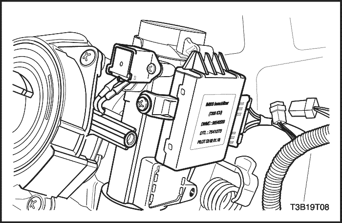
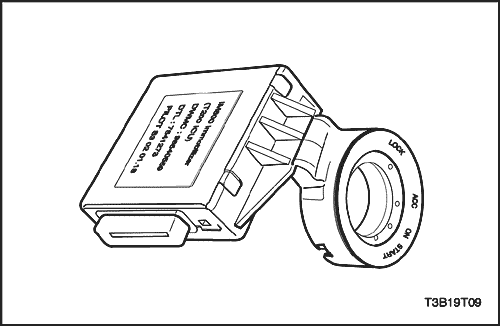
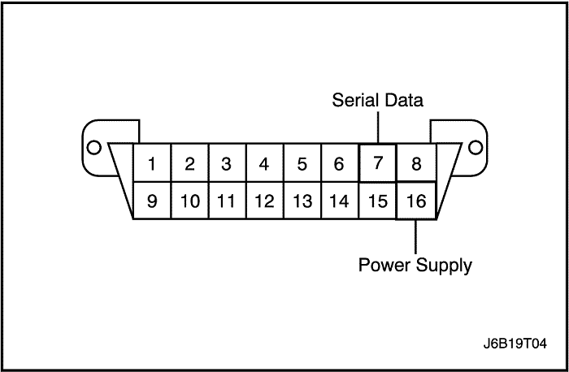

SECCIÓN 9T2
INMOVILIZADOR ANTIRROBO
Precaución: Desconecte el cable negativo de la batería antes de desmontar o instalar cualquier unidad eléctrica o cuando exista la posibilidad de que una herramienta o equipo pueda entrar en contacto con bornes eléctricos expuestos. La desconexión de dicho cable ayudará a evitar lesiones personales y daños al vehículo. La llave de contacto debe estar en posición LOCK a menos que se indique lo contrario.
DIAGRAMAS DE ESQUEMAS Y DIRECCIONES
Inmovilizador antirrobo (Gasolina)



Inmovilizador antirrobo (Diesel)

DIAGNÓSTICO
Sistema inmovilizador (MR-140, HV-240, SIRIUS D4)
El sistema inmovilizador antirrobo requiere un diagnóstico cuando no es posible arrancar el motor. Si el fallo de arranque se debe al sistema inmovilizador, debería activarse un código de diagnóstico de averías (P) 1626, 1628, 1629, 1631.
La unidad de control del inmovilizador supervisa la detección y la lectura de la llave de encendido. La capacidad de-autodiagnóstico está limitada a estas funciones. Los fallos se comunican a un scanner durante el diagnóstico, pero no se almacenan en la memoria de la unidad de control del inmovilizador.
El uso no autorizado de un scanner podría deteriorar del sistema inmovilizador - antirrobo, ya que ciertos procedimientos exigen el uso de una contraseña. Las siguientes funciones están protegidas por contraseña:
- Codificación de una llave adicional.
- Borrado de todos los códigos de la llave.
Las siguientes funciones no requieren contraseña:
- Lectura de una llave de encendido para determinar si el emisor-receptor está funcionando o si la llave está autorizada.
- Lectura del código ID del inmovilizador para verificar que coincida con el código de identificación del ECM.

DTC U0167 (MR-140, HV-240), P1628 (SIRIUS D4)
Error del inmovilizador ECM (no se ha podido establecer comunicación)
descripción del circuito
Cuando se gira la llave de contacto a la posición ON, el inmovilizador- antirrobo comprueba la llave. Mientras el control del inmovilizador lee el código de la llave, el motor puede arrancar y ponerse en marcha con cualquier llave que haga girar el cilindro de la cerradura. El código de la llave es leído y comparado con los códigos de llaves que se han almacenado en la memoria de la unidad de control del inmovilizador. Si se detecta una llave válida, la unidad de control del inmovilizador envía un mensaje de liberación de datos serie al módulo de control electrónico del motor (ECM). En el mensaje de desbloqueo se incluye un código de identificación (ID) que garantiza que ni la unidad de control del inmovilizador ni el ECM han sido sustituidos para burlar el sistema. Si el ECM recibe un mensaje de desbloqueo no válido, el ECM realiza las siguientes acciones:
- Desactiva el circuito de los inyectores de combustible.
Los códigos U0167 y P1628 se activarán cuando:
- El ECM no reciba la señal del módulo de control del inmovilizador antes de 1,260 segundos después de que se haya girado la llave de contacto a la posición ON.
- Las condiciones anteriores se mantengan hasta que se gire la llave de contacto a la posición OFF.
Los códigos U0167 y P1628 se borrarán cuando:
- Se gire la llave de contacto a la posición OFF o se emita el mandato de BORRAR CÓDIGO DE AVERÍA del scanner.
U0167, P1628 - Error del inmovilizador ECM (no se ha podido establecer comunicación)
| Paso | Medida | Valor(es) | Sí | No |
| 1 | Conecte el scanner siguiendo este procedimiento: - Inserte el cartucho en el scanner.
- Gire la llave de contacto a la posición OFF.
- Enchufe el scanner al conector de diagnóstico (DLC).
- Conecte el cable de alimentación de corriente del scanner al enchufe del encendedor.
- Seleccione el modo del inmovilizador en el scanner.
- Gire la llave de contacto a la posición ON, pero no arranque el motor.
¿Se ha establecido la comunicación entre el scanner y la unidad de control del inmovilizador? | - | Vaya al Paso 2 | Ir a "Comunicación entre el equipo de comprobación y la unidad de control del inmovilizador" |
| 2 | Lea el mensaje CÓDIGO ID INMO Y ECM que aparece en pantalla tras pedir el DIAGNÓSTICO DEL SISTEMA. ¿El mensaje era distinto al mensaje normal? Mensaje normal: MODO ECM: MEMORIZADO MODO INMO.: MEMORIZADO CÓDIGO VIN: IGUAL | - | Ir a "Reprogramación de códigos de identificación (ID)" | Vaya al Paso 3 |
| 3 | Compruebe si hay algún cable de datos serie abierto entre la unidad de control del inmovilizador y el ECM. ¿Estaba el circuito abierto? | - | Vaya al Paso 4 | Vaya al Paso 5 |
| 4 | Repare el cable de datos serie abierto entre el ECM y la unidad de control del inmovilizador. ¿Se ha realizado la reparación? | - | Sistema OK | - |
| 5 | - Sustituya el inmovilizador.
- Reprograme el código de identificación (ID). Consulte el apartado "Reprogramación del código de identificación" de esta sección.
¿Se ha realizado la reparación? | - | Sistema OK | Vaya al Paso 6 |
| 6 | - Sustituya el ECM.
- Gire la llave de contacto a las posiciones ON y OFF durante más de 4 segundos.
- Gire la llave de contacto a la posición ON.
¿Se ha realizado la reparación? | - | Sistema OK | - |
DTC P1631 (MR-140, HV-240), P1629 (SIRIUS D4)
Error del inmovilizador ECM (respuesta incorrecta)
descripción del circuito
Cuando se gira la llave de contacto a la posición ON, el inmovilizador- antirrobo comprueba la llave. Mientras el control del inmovilizador lee el código de la llave, el motor puede arrancar y ponerse en marcha con cualquier llave que haga girar el cilindro de la cerradura. El código de la llave es leído y comparado con los códigos de llaves que se han almacenado en la memoria de la unidad de control del inmovilizador. Si se detecta una llave válida, la unidad de control del inmovilizador envía un mensaje de liberación de datos serie al módulo de control electrónico del motor (ECM). En el mensaje de desbloqueo se incluye un código de identificación (ID) que garantiza que ni la unidad de control del inmovilizador ni el ECM han sido sustituidos para burlar el sistema. Si el ECM recibe un mensaje de desbloqueo no válido, el ECM realiza las siguientes acciones:
- Desactiva el circuito de los inyectores de combustible.
Los P1631, 1629 se activarán cuando:
- El ECM reciba un mensaje de desbloqueo incorrecto de la unidad de control del inmovilizador más de 5 veces.
Los P1631, 1629 se borrarán cuando:
- Se gire la llave de contacto a la posición OFF o se emita el mandato de BORRAR CÓDIGO DE AVERÍA del scanner.
P1631, 1629 - Error del inmovilizador ECM (respuesta incorrecta)
| Paso | Medida | Valor(es) | Sí | No |
| 1 | Conecte el scanner siguiendo este procedimiento: - Inserte el cartucho en el scanner.
- Gire la llave de contacto a la posición OFF.
- Enchufe el scanner al conector de diagnóstico (DLC).
- Conecte el cable de alimentación de corriente del scanner al enchufe del encendedor.
- Gire la llave de contacto a la posición ON, pero no arranque el motor.
¿Se ha establecido la comunicación entre el scanner y la unidad de control del inmovilizador? | - | Vaya al Paso 2 | Ir a "Comunicación entre el equipo de comprobación y la unidad de control del inmovilizador" |
| 2 | - Seleccione DIAGNÓSTICO en el menú del scanner.
- Lea el mensaje CÓDIGO ID INMO Y ECM (código de identificación del inmovilizador y del módulo de control electrónico).
¿El mensaje era distinto al mensaje normal? Mensaje normal: MODO ECM: MEMORIZADO MODO INMO.: MEMORIZADO CÓDIGO VIN: IGUAL | - | Ir a "Reprogramación de códigos de identificación (ID)" | Vaya al Paso 3 |
| 3 | - Sustituya el ECM.
- Reprograme el código de identificación (ID).
¿Se ha realizado la reparación? | - | Sistema OK | Vaya al Paso 4 |
| 4 | - Sustituya el ECM.
- Gire la llave de contacto a las posiciones ON y OFF durante más de 4 segundos.
- Gire la llave de contacto a la posición ON.
¿Se ha realizado la reparación? | - | Sistema OK | - |
Errores de estado de las llaves (MR-140, HV-240, SIRIUS D4)
En el scanner pueden aparecer los siguientes mensajes de ESTADO DE LLAVE después de ordenar la CODIFICACIÓN DE LA PRIMERA LLAVE y AGREGAR LLAVE:
- ESTADO ENCENDIDO DESCONECTADO. Este mensaje informa al técnico de que la llave de contacto está en posición OFF durante el proceso de codificación de la llave Gire la llave de contacto a la posición ON durante la codificación de la llave, pero no arranque el motor.
- LLAVE OCUPADA. Sólo se pueden codificar cinco llaves. Si se desea disponer de una llave nueva, hay que borrar los códigos de las llaves anteriores. Entonces podrán autorizarse hasta cinco llaves.
- YA AUTORIZADO. Se está intentando codificar una llave que ya está autorizada.
- ERROR Nº A3, A4, A5: No hay comunicación entre el emisor-receptor en la llave de encendido y la bobina de detección. Siga los pasos siguientes para diagnosticar el problema:
- Pruebe con una llave diferente. Si la segunda llave funciona el problema reside en la primera llave.
- Si con la segunda llave aparece el mismo problema, sustituya la bobina de detección.
- LLAVE NO VÁLIDA. La comunicación entre la unidad de control del inmovilizador y el emisor-receptor de la llave no ha validado la llave. Siga los pasos siguientes para diagnosticar el problema:
- Codifique la llave. Consulte el apartado "Proceso de codificación de llaves" de esta sección.
- Si se obtiene el mismo mensaje tras codificar la llave, compruebe la conexión de la bobina de detección.
- Si la bobina de detección está bien, sustituya el inmovilizador. Consulte el apartado "Unidad de control del inmovilizador" de esta sección.
- NO SE HA DETECTADO EMISOR-RECEPTOR. El fallo puede estar en el emisor-receptor de la llave de encendido, en la bobina de detección o en el inmovilizador. Siga los pasos siguientes para diagnosticar el problema:
- Pruebe con una llave diferente. Si la segunda llave funciona el problema reside en la primera llave.
- Si aparece el mismo mensaje con la segunda llave, compruebe la conexión de la bobina de detección.
- Si la conexión de la bobina de detección está bien, desconecte la bobina de detección y use un ohmímetro para comprobar si hay alguna interrupción en la bobina de detección.
- Si la bobina de detección no está abierta, sustituya la unidad de control del inmovilizador. Consulte el apartado "Unidad de control del inmovilizador" de esta sección.
Comunicación entre el equipo de comprobación y la unidad de control del inmovilizador (MR-140, HV-240, SIRIUS D4)
- Conecte el equipo de comprobación tal y como se describe en el Manual del equipo del scanner.
- Si la comunicación entre el scanner y el equipo de comprobación es infructuosa, espere 30 segundos y vuelva a intentarlo.
- Si tampoco se consigue comunicar en el segundo intento, gire la llave de contacto a la posición OFF y compruebe el cable y los conectores entre el terminal 7 de la unidad de control del inmovilizador y el terminal 7 del conector de diagnóstico (DLC).
- Si el cable y los conectores entre el DLC y la unidad de control del inmovilizador están bien, sustituya la unidad de control del inmovilizador. Consulte el apartado "Unidad de control del inmovilizador" de esta sección.
MANTENIMIENTO Y REPARACIÓN
Servicio en el vehículo
Proceso de codificación de llaves
- Instale el cartucho de la unidad de control del inmovilizador en el scanner.
- Gire la llave de contacto a la posición OFF.
- Conecte el scanner.
- Gire el contacto a la posición ON con la llave que vaya a codificarse.
- Introduzca la contraseña de 4 dígitos que permite al personal del taller usar el scanner para codificar llaves.
- Use el mandato del scanner.
- Verifique que la codificación de llaves haya sido correcta arrancando el motor con cada una de las llaves autorizadas.
Reprogramación del código de identificación
Reprograme el código de identificación (ID) cuando:
- Se haya sustituido una unidad de control del inmovilizador.
- Se haya sustituido un módulo electrónico de control (ECM).
Emisor-receptor
Cada llave de encendido válida tiene un emisor-receptor interno que es un emisor-receptor de lectura/escritura.
El emisor-receptor contiene la implementación de un cripto-algoritmo con 96 bits de una clave secreta configurable por el usuario, almacenada en la memoria EEPROM; transmite datos a la ICU modulando la amplitud del campo electromagnético y recibe datos y órdenes de forma similar.

unidad de control del inmovilizador
Procedimiento de desmontaje
- Retire la tapa inferior del panel de instrumentos.

- Desenchufe el conector eléctrico de la unidad de control del inmovilizador.

- Desmonte la unidad de control del inmovilizador.
procedimiento de montaje
- Monte la unidad de control del inmovilizador.
- Enchufe el conector eléctrico a la unidad de control del inmovilizador.
- Monte la tapa inferior del panel de instrumentos. Importante: Después de sustituir el inmovilizador, se debe volver a autorizar las llaves usando el proceso de codificación de llaves. Consulte el apartado "Proceso de codificación de llaves" de esta sección.
DESCRIPCIÓN GENERAL Y FUNCIONAMIENTO DEL SISTEMA
Sistema inmovilizador
El propósito del sistema inmovilizador es proporcionar otra forma de protección antirrobo al vehículo en el que se instala y evitar que personas no autorizadas roben o conduzcan el vehículo.
La verificación de la autorización del usuario se realiza mediante una llave de encendido con emisor-receptor integrado.
El LED externo muestra el estado del inmovilizador y cumple una función adicional de disuasión para el posible ladrón.
Para garantizar la comunicación, el estado se intercambia entre el inmovilizador y el ECM a 5 bytes de datos codificados.
Estos 5 bytes se componen de una combinación de datos aleatorios y dos tipos de códigos fijos.
- Un número de identificación del modelo del vehículo: MIN
- Una identificación específica del vehículo: VIN
El MIN se conoce a partir del primer suministro del sistema.
El VIN es generado por la ICU en el orden especial a partir de la codificación de llaves (lectura del código del emisor-receptor y almacenamiento como código de llave válido en la memoria EEPROM del inmovilizador).
Un dato aleatorio diferente se calcula en cada transición de llave.
Todas las comunicaciones de inmovilización entre el ECM y la ICU se realizan en la línea- K (línea K: línea de datos serie '7').
Debido a la memorización del número de identificación específico del vehículo, tanto la ICU como el ECM pueden permanecer en tres modos estables.
- Modo virgen (VIN no memorizado)
- Modo memorizado (VIN memorizado)
- Modo neutro (para memorizar un nuevo VIN)
En caso de utilizar una llave válida, el ECM comunicará el mensaje de aprobación y el LED mostrará la llave válida de estado al inmovilizador. En caso de utilizar una llave no válida, el ECM desactivará el circuito de los inyectores de combustible con intervención codificada y activará un DTC (código de diagnóstico de averías).
Las condiciones anteriores se mantienen hasta que se desconecta el encendido.
No puede intercambiarse un ECM para un vehículo sin unidad de control del inmovilizador por otro ECM que sí utilice un sistema con unidad de control del inmovilizador. La unidad de control del inmovilizador y el ECM deben tener un código ID coincidente. La codificación ID y la codificación de las llaves se realiza usando un Scanner-100.
El sistema inmovilizador consta de:
- Un número máximo de 5 llaves de contacto con emisor-receptor integrado.
- La bobina toroidal (bobina de detección) para excitar y leer el emisor-receptor montada en la cerradura de contacto.
- La unidad de control del inmovilizador (ICU) con:
-
- - Fuente de alimentación.
- - Circuito de entrada de encendido.
- - Unidad de modulación y desmodulación del emisor-receptor.
- - EEPROM.
- - Unidad electrónica del conductor para el LED de estado externo.
- - Hardware de enlace de datos serie.
- El LED de estado externo para visualizar el estado del inmovilizador.
- El enlace de datos serie entre el inmovilizador y el ECM.
Llaves codificadas electrónicamente
Cada llave de encendido válida tiene un emisor-receptor interno que es un emisor-receptor de lectura/escritura.
El emisor-receptor contiene la implementación de un criptoalgoritmo con 96 bits de una clave secreta, configurable por el usuario y almacenada en la memoria EEPROM y que transmite datos a la ICU modulando la amplitud del campo electromagnético, recibiendo datos y órdenes de forma similar.
Bobina de detección
La bobina toroidal va montada en la cerradura del contacto, delante del cilindro de la llave de contacto.
Se conecta a la ICU con un conector de cuatro terminales, sujeto al cuerpo de la bobina.
La longitud de la conexión entre la bobina y el inmovilizador se limita a 50 cm. La colocación correcta en la cerradura del encendido y los datos eléctricos exactos son muy importantes para la distancia de lectura del emisor-receptor.
La bobina toroidal y la bobina receptora dentro del emisor-receptor conforman un transformador. Durante el proceso de lectura, la bobina induce energía al emisor-receptor. El emisor-receptor carga el campo y genera una señal modulada en amplitud con los datos codificados. Esta carga del campo se desmodula dentro del inmovilizador.
El inmovilizador contiene el hardware activador de la bobina para la conexión directa de la bobina toroidal.
unidad de control del inmovilizador
La función del sistema inmovilizador se comparte entre la ICU y el ECM.
Las funciones de la unidad de control electrónico del inmovilizador (ICU) son:
- Lectura de la información de entrada "encendido conectado/desconectado".
- Control de los LEDs de estado.
- Control del proceso de lectura/escritura del emisor-receptor (modulación, desmodulación, descodificación, comparación del código de lectura con el código de las claves válidas).
- Comunicación con el ECM después de girar la llave de contacto a la posición ON (recepción de la petición del- ECM y transmisión del mensaje de desbloqueo).
- Funciones especiales para el cálculo y manipulación del código - VIN.
El inmovilizador calcula el código VIN utilizando un generador aleatorio.
El código VIN se transmite desde el inmovilizador en la comunicación del mensaje de desbloqueo sólo si se utiliza una llave autorizada. Sin una llave autorizada no es posible obtener el código VIN del sistema. En caso de que el estado interno del ECM estuviera en modo virgen o en modo neutro, el ECM memorizaría automáticamente el código VIN del sistema después de recibir el primer mensaje de respuesta de desbloqueo.
Para obtener un sistema inmovilizador sincronizado (igual al código VIN en el inmovilizador y en el ECM, llave autorizada), debe utilizarse el equipo de comprobación del DLC para conseguir la autorización de las llaves (primera codificación de llaves). Sólo el personal autorizado puede hacer uso del equipo de comprobación.
- Comunicación con el equipo de comprobación-DLC. Las funciones principales son el proceso de codificación de llaves, la manipulación del código- VIN y el soporte para las funciones de comprobación del sistema.
- Manejo del sistema vigilante del software.
Funcionamiento
En el modo activo del inmovilizador (motor apagado, llave de contacto en posición OFF), el LED de estado parpadea como en el modo A. Cuando gira la llave de contacto a la posición ON, el sistema se reactiva y trata de leer el emisor-receptor.
En caso de detección de una llave válida, se produce la comunicación del mensaje de desbloqueo con el ECM: El LED de estado muestra el estado del inmovilizador "llave válida".
Después de girar la llave de contacto a la posición OFF (detección de encendido desconectado similar a la detección del encendido del ECM), el inmovilizador cambia a modo activo. El LED de estado parpadea como en modo A.
Modo del conector de diagnóstico (DLC)
Cuando se gira la llave de contacto a la posición ON, un scanner puede cambiar la unidad de control del inmovilizador a modo DLC para el diagnóstico, codificación de la llave o codificación de identificación.
- El LED de estado se apaga durante el modo - DLC.
- El inmovilizador responderá a todos los mensajes correctos, los cuales se definen como mensajes del inmovilizador.
Manipulación de códigos de identificación (ID)
Uno de los 65.535 códigos VIN se almacena en la EEPROM del inmovilizador.
El código VIN se puede borrar utilizando la orden "Restablecer código VIN" del scanner.
Cuando la unidad de control del inmovilizador calcula un nuevo código VIN, el código VIN del ECM debe restablecerse para quedar idéntico al de la unidad de control del inmovilizador.
Durante los procedimientos de diagnóstico, se puede leer el código VIN por medio del mandato del scanner "Leer código VIN de la unidad de control del inmovilizador" con el fin de compararlo con el código VIN del ECM.
Enlace de datos serie
Los datos serie pueden intercambiarse entre un scanner y el ECM y la unidad de control del inmovilizador.

Módulo de control electrónico del motor (ECM)
- ECM en modo virgen.
-
- En este modo, el ECM reconoce sólo el código de identificación del vehículo.
- El motor puede bloquearse/desbloquearse.
- El ECM solicita a la ICU el número VIN. En cuanto el ECM recibe dos tramas de comunicación consecutivas correctas con el mismo código VIN, el ECM lo memoriza.
- El código VIN se almacenará en una memoria no volátil al final de la fase de enclavamiento de alimentación. El modo ECM entra en modo memorizado.
- ECM en modo memorizado.
-
- En dicho estado, el ECM comprueba en cada comunicación la codificación correcta de la ICU.
Si el código recibido no es correcto, el vehículo queda inmovilizado.
-
- Los 5 bytes codificados de datos emitidos por el ECM son una mezcla de código MIN y del código aleatorio.
- Los 5 bytes codificados de datos emitidos por la ICU son una mezcla de código VIN y del código aleatorio.
- ECM en modo neutro.
-
- Este modo es un modo especial intermedio, utilizado para la sustitución de la ICU o la instalación opcional del inmovilizador.
- El ECM solicita a la ICU el número VIN. En cuanto el ECM recibe dos tramas de comunicación consecutivas correctas con el mismo código VIN, el ECM lo memoriza. El código VIN se almacenará en una memoria no volátil al final de la fase de enclavamiento de alimentación. El modo ECM entra en modo memorizado.
- Después de girar la llave de contacto a la posición ON, el ECM controla el motor de forma normal para arrancar y ponerse en marcha mientras espera un mensaje de respuesta de desbloqueo válido desde el inmovilizador.
- Tras recibir un mensaje de respuesta incluyendo la información de la " ICU en modo memorizado" y el código VIN del sistema-correcto
-
- → el ECM entra en estado de desbloqueo, permitiendo que el motor continúe funcionando.
- Tras recibir un mensaje de respuesta incluyendo la información de la "ICU en modo memorizado" y si el código VIN del sistema es incorrecto,
-
- → el ECM no vuelve a enviar otra petición y entra en estado de bloqueo, activando las acciones de inmovilización del motor.
- Si a partir del comienzo del tiempo de desbloqueo el ECM no recibe un mensaje de respuesta en un periodo de tiempo determinado, o si el ECM no recibe ninguna respuesta de desbloqueo,
-
- → el ECM entra en estado de bloqueo, activando las acciones de inmovilización del motor.
- El estado inactivo del inmovilizador (llave válida/llave no válida) finaliza al girar la llave de contacto a la posición OFF.